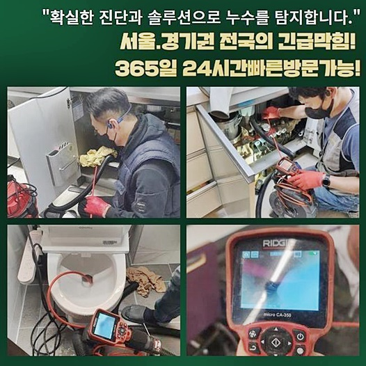
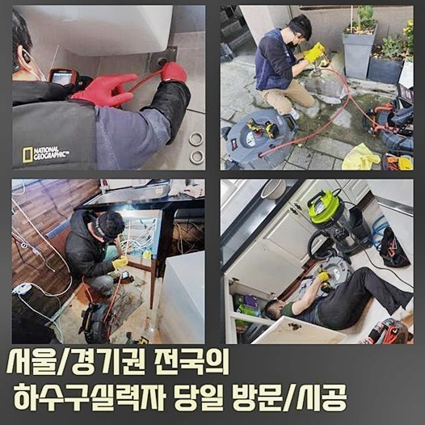
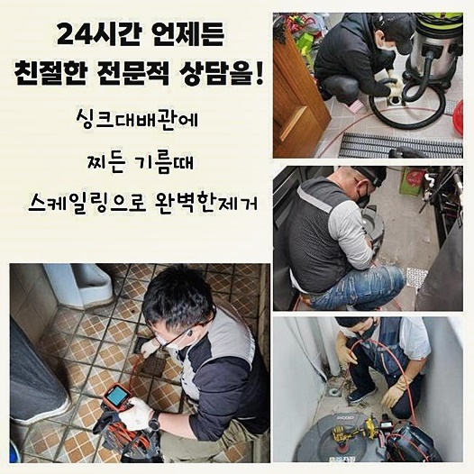
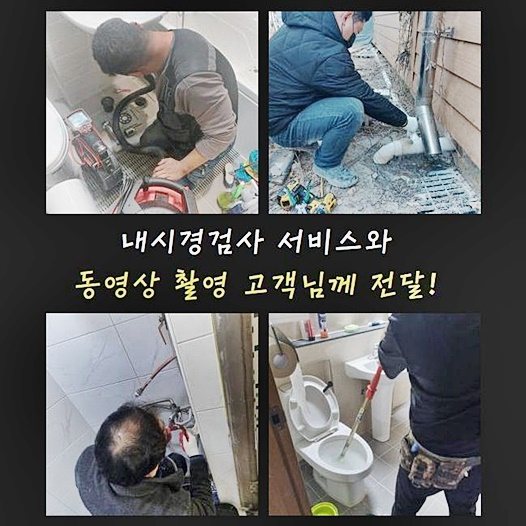
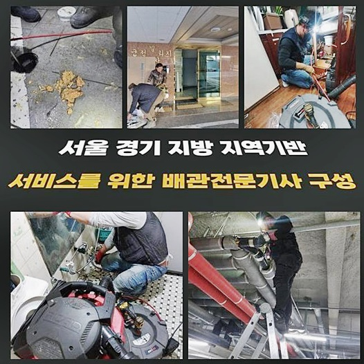
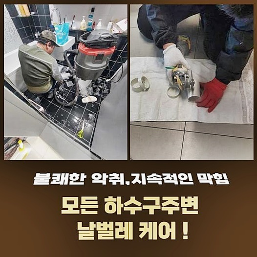
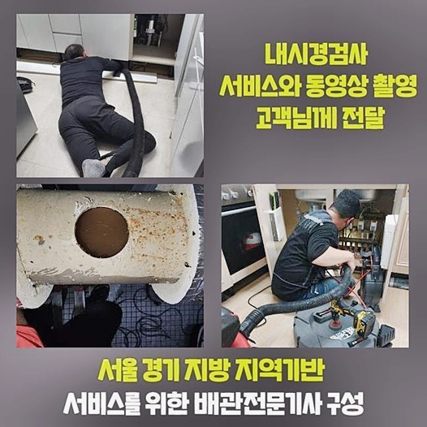

🏠 중앙동오수관뚫음 가수동 하수구뚫어주는업체 통수전문
용인 중앙동 하수구막힘 전문 시공 후기

📋 작업 개요
- 위치: 용인 중앙동, 중앙동, 용인
- 서비스 유형: 하수구막힘, 배관막힘, 역류해결, 뚫는업체, 고압세척, 설비공사, 배관보수
- 작업 일시: 2024. 8. 17. 16:14
- 업체명: 하수구수사대 (010-5615-2118)
🔍 문제 상황
중앙동오수관뚫음 가수동 하수구뚫어주는업체 통수전문
배수설비 막힘을 복구하는 전문팀으로 정비를 다수 진행하게 되면 세대 안쪽 뿐만 아니라 실외의 장애들도 정비해야 하는 상황이 흔한데요
바깥쪽의 하수관은 비가 자주 쏟아지는 등의 날씨의 영향으로 부유물들이 흘러들어가 불현듯 막혀버리는 상황이 발생해요
이러한 경우 예상되는 징후들이 없어서 완전히 예상하지 못한채 이슈에 부딪히게 되니 빠른 처리가 힘들어요
오늘 말씀드리는 하수관 막힘공사 작업을 근거로 어떤 절차로 처리하게 되는지 상세하게 말씀드려볼게요
저희 전문가는 하수파이프 막힘을 전문적으로 장기간 해오고 있어서 다양한 종류의 막힘 문제들을 원활하게 처리하고 있어요
의뢰인의 전화를 받고 찾아간 곳은 물을 쓸 경우 건물 밖의 하수도에서 물이 흘러넘치는 상태였습니다
문제장소에 도착해보니 물이 역류하는 상태를 정확하게 확인하게 되었습니다
일단 문제 구역을 조금 파보니 땅속에 배수파이프가 형태를 드러냈습니다
아직은 확실하게 문제가 드러나지 않았다 해도 하수파이프 어딘가가 손상되었거나 오염물이 유입되는 틈들이 발생했다고 짐작했습니다
여러유형의 하수관로 작업을 실시했고 이 위치와 유사한 문제도 처리해 본 노하우가 있으므로 대강의 상태를 짐작할 수 있었어요
급하다는 이유로 주거지 근처의 신뢰할 수 없는 하수배관 수리점이나 공구점 같은 곳에 연락할 경우 이유를 찾지 못한채 금전만 소모할 수 있으므로 유의해야 합니다
우선 대량의 물은 배출하는 배수시험을 실시했는데요

🔎 원인 분석
💡 전문가 진단: 정밀 진단 장비를 사용하여 슬러지의 고착 여부를 판명하고 타격/세척 작업을 실시했습니다.
상당한 양의 물이 계속해서 배출되는 것을 눈으로 직접 확인하였습니다
바닥을 더 발굴해보니 커다란 배수로가 갈라진 것을 찾게 되었습니다
배수관 지름이 거대한 데다 상당한 양의 흙이 내부에 있어서 수리작업이 간단하지 않겠다고 생각이든 순간이었답니다
저희 하수배관 막힘 전문업체는 일단 배관을 점검하여 내부 환경을 주의 깊게 관찰해 보기로 했습니다
관로를 탐지하기 위해 배수로가 통과하는 라인을 확인하여 바닥을 더 걷어내는 작업을 실시해 주었습니다
타 지점에 영향을 주면 안되기 때문에 천천히 주의깊게 작업했습니다
관로를 탐지하면서 추가로 부서진 구역이 있는지 확인해 보았습니다
연결되어 있는 하수파이프로 하수관로 내시경 장치를 삽입하여 더 손상된 영역은 없는지 점검하였는데요
배수파이프 내부에 나뭇가지들과 기름찌꺼기가 꽉 채워진 상황을 확인했어요
아마도 깨진 하수관을 통하여 나뭇가지들과 잔해들이 들어간 듯 보입니다
예측한 것보다 상당한양의 잔가지들을 확인하고 약간 당황하긴 했지만 확실하게 치워주지 않게 되면 계속해서 막힘현상의 원인이 되기 때문에 하수관 시공이 가능한 저희팀이 해결책을 드려야 하는 현장이었습니다
샤프트 장치의 헤드부속을 활용하여 분해 작업을 실시하기로 결정하였답니다
식물 덩쿨의 크기가 큰편이다 보니 작은조각으로 깎아내지 않으면 밖으로 추출해내기 힘든 상태라고 진단했습니다
하수배관 세정을 하려면 반복적으로 배수관 내시경 카메라를 주시하면서 세정 작업을 진행해야 다른 지점에 파손이 발생하지 않아요

🔧 작업 과정
샤프트 도구는 파이프 안쪽의 오염물과 기름때덩어리들을 효율적으로 깎아내면서 세척 할 수 있는 효과적인 장치입니다
믿을 수 있는 하수관막힘 업체라면 필수적으로 구비해야 할 고급 기구라고 생각해주시면 됩니다
경우에 따라 스프링장치를 적용하여 바깥으로 꺼내는 사례도 있어요
스프링기기는 전기 동력을 적용하여 오염물을 깎아내고 외부로 방출하는 장치입니다
해당현장의 경우 하수관 깊이가 깊고 안쪽의 공간을 확보하기가 까다로워 플렉스 샤프트 기기가 뚫어내는 방법으로 적절하다고 진단했습니다
초기과정으로 깎아내는 시공을 진행해드리고 하수배관 물 흐름이 막혔던 관 내를 재차 점검했는데요
플렉스 샤프트 기계에 체인을 결합해서 스핀 기능으로 가득찬 찌꺼기들에 갈아내는 방식을 실시했어요
잔가지들이 생각보다 두툼하고 많았기 때문에 굵직한 체인장비를 사용해야했습니다
이물질들이 파괴되는 소리가 하수관 바깥에서 들리는 정도로 상당히 컸어요
누적된 식물줄기들 크기가 커서 깎아내기가 어려웠어요
석션장비로 흘러넘친 물을 빨아들이며 제거를 마친 후 하수관로를 붙이는 작업을 처리했습니다
PVC 소재로 결합하는 작업을 처리하였는데요
PVC 재료는 견고하고 탄력이 있어 안쪽의 하수파이프로 대부분 활용합니다
배수관 내시경으로 다른 영역도 점검하니 또 다른 손상 부위를 확인할 수 있었습니다
하수관이 낡는건 흔히 동시에 발생되기 때문에 여러지점이 동시에 부식되면서 문제가 발생할 수 있어요
하수파이프 막힘을 뚫는 저희 업체가 현지에서 수리를 해본 바에 따르면 거의 다 그런 것 같더라고요
파악한 문제 위치를 발굴해보니 가지런히 놓여있는 배수파이프 또한 손상이 있는 것을 발견할 수 있었습니다
이곳저곳 부식된 부분이 많기 때문에 시공시간 또한 길어졌어요
부식된 부분에 유지보수를 실행하지 않으면 문제를 해결할 수 없으니 연결 장치를 이용해서 유지보수를 진행해드렸습니다
여기도 PVC 하수관을 적용했고 연결 지점에 유격이 없도록 정밀하게 실행해드렸습니다
재차 내시경기기로 안쪽 현황을 체크한 후 문제가 없다는 결론을 지을 수 있었어요


✅ 작업 완료
배수시험을 시도했습니다
배수로에서 반대로 올라오거나 막히는 상황없이 물이 배수설비로 잘 빠지고 상부로 물이 스미는 현상도 없으므로 배수상태가 괜찮은지 확인하는 테스트를 마친 후 바닥면을 정리한 후 작업을 완료했습니다
오늘 사례처럼 배수관에 파손을 유발할 수 있는 시공을 할 때는 정교한 전문팀의 도움이 필수적인 시공입니다 그러므로 가정에서 문제해결을 시도하려다가 막대한 손실들을 초래할 수 도 있어요
장애가 일어났을때 단번에 해결된다면 좋을테지만 그렇지 않은 경우 반드시 전문팀의 도움 받기를 추천드려요
하수관로 막힘으로 이슈가 있을 경우 마음편히 저희 전문기사님께 연락 부탁드립니다
지체없이 찾아뵈어 철저하고 즉각적으로 문제상황을 처리해 드릴게요




⚠️ 하수구 배관 막힘 예방 및 관리 가이드
- ✅ 머리카락, 비닐, 물티슈 등 물에 분해되지 않는 이물질은 하수구 유입을 절대 금지해 주세요.
- ✅ 하수구 거름망을 씌우고 모여진 이물질은 주기적으로 쓰레기통에 바로 비워주셔야 합니다.
- ✅ 배관 노후가 심할 경우 이물질이 더 쉽게 걸리므로 주기적인 배관 세척(고압세척 등)을 권장합니다.
- ✅ 작업 후 1년 이내 재발 시 하수구수사대에서 무상 A/S 보증 서비스를 제공합니다.
💡 핵심 정리
- 확실한 장비 작업(내시경 점검 및 샤프트 스케일링)으로 원인을 뿌리 뽑습니다.
- 작업 후 1년 이내에 동일한 부위 재발 시 100% 무상 A/S 서비스를 보장합니다.
- 서울 · 경기 · 인천 전 지역에 24시간 언제든 긴급 출동할 수 있도록 항시 대기 중입니다.
❓ 자주 묻는 질문 (FAQ)
🚨 용인 중앙동 하수구막힘 문제로 고민이신가요?
정확한 원인 진단과 확실한 시공으로 재발 없는 해결을 약속드립니다.
24시간 긴급 출동 | 서울 · 경기 · 인천 전지역 | 1년 내 재발 시 무상 A/S